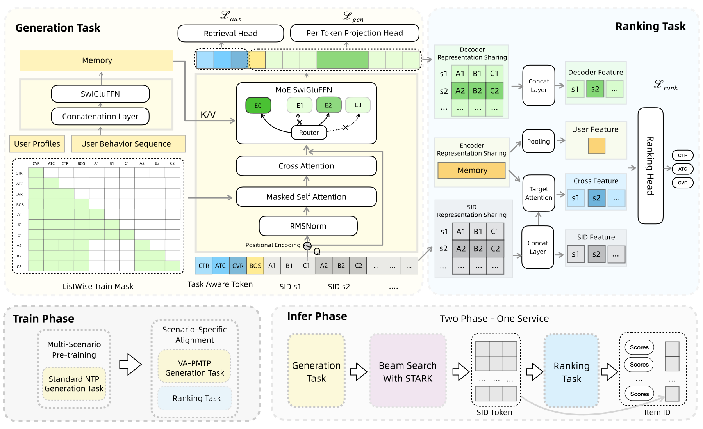
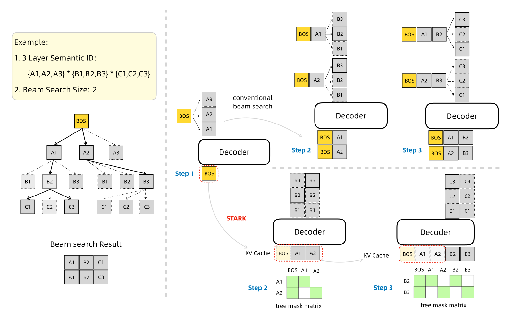
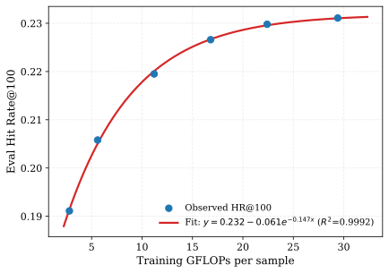
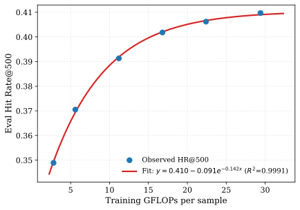

UniSGR：语义ID生成与排序的统一框架
摘要
推荐系统在现代电商平台中发挥着关键作用。尽管生成式检索已成为一种有望缓解多阶段级联架构局限性的范式，现有方法在细粒度多目标排序方面仍存在困难。为弥合这一差距，我们提出UniSGR，一个统一的语义ID生成与排序框架。UniSGR采用两阶段训练范式：多场景预训练阶段从混合业务场景数据中学习，随后是场景特定对齐阶段，该阶段联合优化价值感知并行多词元预测（VA-PMTP）和统一多目标排序模块。为使生成更好地与下游排序对齐，我们引入由漏斗感知对比学习引导的任务感知词元（TAT）。此外，我们提出基于重组KV缓存的语义树注意力（STARK），这是一种消除传统束搜索中关键效率瓶颈的推理策略。在大规模电商平台上的大量离线实验表明了UniSGR的有效性和可扩展性。
1. 引言
推荐系统（RSs）对现代电商平台不可或缺(Alamdari et al., 2020)。工业级系统通常组织为级联流水线，其中候选检索之后依次是粗排、精排和重排阶段(Isinkaye et al., 2015; Ko et al., 2022)。在DLRM时代(Mudigere et al., 2022; Covington et al., 2016; Zhou et al., 2018)，检索通常通过高效的双塔匹配模型实现：用户和物品特征被独立编码，物品嵌入在离线建立索引，大规模最大内积搜索在严格延迟约束下检索候选。
尽管有效，这种级联架构为每个模块优化的是局部子任务，而非端到端推荐目标。下游排序器只能对上游检索保留的候选重新排序，因此早期被过滤掉的相关物品无法在后续被恢复。这种分阶段分解限制了真正端到端推荐的可能性。
生成式检索近来已成为一种有前景的替代方案(Deng et al., 2025; Zhai et al., 2024)。通过将推荐表述为自回归生成，这些方法直接生成物品标识符（通常表示为离散语义ID），从而为候选生成提供了更统一的视角。
然而，现有生成式检索方法的排序能力仍然有限。它们能够选择语义相关的候选，但往往缺乏工业排序所需的细粒度区分能力。一种直接的解决方案是在生成式检索之后添加一个判别式排序器，但这重新引入了目标不匹配：生成器被优化以产生合理的候选，而排序器则在截断的候选集上优化最终效用。
训练范式是另一个关键因素。大型平台包含多个业务场景，其意图、行为和目标具有异质性。仅在目标场景上训练会限制所学知识的可迁移性，而简单地将所有数据汇集在一起又可能削弱场景特定的适应性。因此，我们采用多场景预训练后接场景特定对齐，这一范式类似于基础模型中的广泛预训练与下游适应(Brown et al., 2020; Devlin et al., 2019)。
受此视角启发，我们提出UniSGR，一个统一的语义ID生成与排序框架。UniSGR在单一学习框架中耦合生成式检索和判别式排序，将面向排序的监督纳入语义ID生成，使生成的候选更好地与下游业务目标对齐。
该框架进一步支持多目标优化，使点击、加购和购买信号能够被纳入同一个训练过程。因此，语义ID生成和排序都朝着共享的推荐目标进行优化。
我们的主要贡献可总结如下：
-
(1)
我们提出UniSGR，一个无缝集成语义ID生成和多目标排序的统一框架，缓解了传统级联架构固有的差距。
-
(2)
我们设计了一种两阶段训练范式，将多场景预训练与场景特定对齐相结合，其中价值感知并行多词元预测（VA-PMTP）和任务感知词元（TAT）有助于使生成与业务目标对齐。
-
(3)
我们引入STARK，一种为语义ID量身定制的高效树注意力推理策略，在工业规模场景中实现了的吞吐量提升。
-
(4)
在真实电商平台上进行的大量离线评估和在线A/B测试验证了UniSGR的有效性和可扩展性。
2. 相关工作
2.1. 深度学习推荐模型
传统DLRM依赖以ID为中心的稀疏特征和连续稠密特征，随后进行显式或学习的特征交互。Wide & Deep(Cheng et al., 2016)结合了记忆与泛化，而DeepFM(Guo et al., 2017)通过共享嵌入联合建模低阶和高阶特征交互。基于注意力的模型如AutoInt(Song et al., 2019)和DIN(Zhou et al., 2018)进一步从历史行为中捕获多样化的用户兴趣。DLRM(Naumov et al., 2019)解决了稠密计算与稀疏嵌入查找之间的系统级约束，而LONGER(Chai et al., 2025)通过解耦检索和内容表示空间改进了长序列建模。
2.2. 生成式推荐模型
近期工作利用语义表示和生成模型来解决标准基于ID推荐的局限。TIGER(Rajput et al., 2023)通过RQ-VAE(Lee et al., 2022)引入语义元组ID。同时，HLLM(Chen et al., 2024)将物品级语义建模与用户序列建模相结合。为处理高基数设置，HSTU(Zhai et al., 2024)使用线性门控聚合提高效率。此外，MTGR(Han et al., 2025)研究了工业生成式推荐中的缩放行为。OneRec(Deng et al., 2025)和OneRec-Think(Liu et al., 2025)也探索了端到端生成范式，将偏好优化与推理增强生成相结合。
3. 方法
3.1. 数据组织
训练数据按照两阶段学习范式进行组织。在多场景预训练中，我们混合来自多个业务场景的用户行为日志，并从按时间排序的交互序列构建下一物品生成样本。每个样本由用户画像特征、场景/上下文特征、先前交互过的物品以及下一交互物品的语义ID序列组成。此阶段旨在使模型接触跨多个场景的多样化用户兴趣和物品语义。
在场景特定对齐中，样本来自目标场景并包含更丰富的行为标签。对于用户会话，我们收集与不同行为类型（如点击、加购和购买）相关联的候选目标物品。这些行为特定目标以两种方式使用：VA-PMTP将它们视为具有不同业务价值权重的生成目标，而排序模块使用共享的生成表示来预测其对应的行为标签。这种安排使生成和排序能够在同一语义ID表示空间上联合优化。
在服务阶段，输入遵循与训练相同的特征组织方式。编码器接收用户画像、行为序列和上下文特征，而解码器为候选物品生成语义ID。随后排序模块对生成的候选进行打分，而不依赖单独的基于物品ID的排序模型。
3.2. 问题形式化
我们将序列推荐形式化为统一的生成式检索与多目标排序。令和分别表示用户集和物品集。对于每个用户，系统观测到用户画像特征和按时间排序的交互序列，其中。每个物品被映射为离散语义ID序列，其中是语义层数。
我们的框架通过与两阶段学习范式对齐来解决这一问题：
1. 多场景预训练：模型从混合业务场景数据中学习可泛化的用户兴趣，并作为纯生成式检索器：
| (1) |
2. 场景特定对齐：通过联合优化价值感知的下一词元预测和多目标排序，将预训练模型适配到目标场景。给定语义ID和生成隐状态，模型使用BCE损失预测点击、加购和购买标签：
| (2) |
推理服务：对齐后的模型通过束搜索解码候选，并复用生成的语义ID和隐状态来计算多目标分数。随后，服务系统可以返回重排后的Top-推荐，而无需调用单独的排序模型。
3.3. 分词器
我们首先通过使用行为交互对微调Qwen3-VL来获得多模态协同物品嵌入，然后使用RQ-VAE和Sinkhorn-Knopp分配将其离散化为一个平衡的3层语义码本。
协同感知表示。对于物品，我们将文本元数据和视觉特征输入Qwen3-VL，记为，以获得多模态嵌入：
| (3) |
我们使用交互过的目标物品作为正样本，曝光但未点击的物品作为难负样本，批次内物品作为易负样本。网络使用以下InfoNCE损失进行优化：
| (4) |
其中，表示余弦相似度，是温度超参数。
量化。我们应用带有Sinkhorn-Knopp平衡分配的残差量化VAE（RQ-VAE）(Zeghidour et al., 2021)，生成3层语义层次结构，码本大小为。
3.4. UniSGR框架

图1展示了UniSGR，一个基于Transformer的非对称编码器-解码器框架，包含轻量级特征编码器和深层稀疏专家混合（MoE）解码器。
特征编码器（MemoryNet）。编码器处理用户画像、先前交互过的物品和上下文标签。MemoryNet不使用自注意力，而是通过MLP映射用户画像，并将其作为前缀词元前置到行为序列中。每个历史物品由其语义ID嵌入以及行为和位置信息表示，因此编码器能够区分物品身份和交互类型。随后，位置编码、dropout和线性投影产生静态记忆表示，其复杂度为线性的。这一设计有意保持轻量：它保留了解码器所需的信息，同时避免了对长用户历史的二次自注意力计算。
稀疏MoE解码器。解码器自回归生成语义ID词元，以可学习的BOS词元初始化，并通过交叉注意力以为条件。学习得到的词元类型嵌入（TTE）被加到语义ID嵌入上以编码其层次结构。这一点至关重要，因为不同语义ID层级解码不同的语义：上层捕获粗粒度语义聚类，而下层提供更细粒度的区分和物品唯一性。因此，解码器联合学习序列级生成和层级感知的语义细化。
3.5. 两阶段训练范式
UniSGR 采用两阶段训练范式：
-
(1)
多场景预训练阶段： 通过对来自多个业务场景的混合数据执行下一词元预测，捕获通用用户兴趣与物品语义。
-
(2)
场景特定对齐阶段： 引入 VA-PMTP 与统一的多目标排序模块，使生成与目标场景的业务目标对齐。
3.5.1. 多场景预训练阶段
与仅在单一场景的稀疏交互上训练不同，多场景预训练使 UniSGR 接触到跨业务场景聚合的多样化行为信号。预训练采用 NTP 损失：
| (5) |
由此得到的骨干网络为后续的场景特定对齐提供了稳健的基础。
该阶段以广泛的跨场景兴趣初始化语义 ID 生成器，这对稀疏的目标场景尤为有益，否则这些场景会面临覆盖不足与过拟合问题。
3.5.2. 价值感知的并行多词元预测
为捕获目标场景中的多个并发兴趣，我们引入并行 MTP（PMTP），它针对同一会话中的多个自回归语义 ID 目标使用定制的并行掩码：
-
•
同一物品内部：在所有层级的语义 ID 之间施加因果掩码。
-
•
不同物品之间：强制相互不可见。
-
•
共享 BOS 词元：所有语义 ID 均可访问 BOS 词元，通过单一 BOS 统一多个兴趣的表示。
我们进一步引入行为上的业务价值权重（例如，购买 > 加入购物车 > 点击 > 曝光），得到 VA-PMTP 损失：
| (6) |
其中 为业务价值权重， 为会话内目标 对应的物品集合。
与标准 NTP 相比，VA-PMTP 既通过并行的行为特定目标提升了目标多样性，又使生成偏向更高价值的行为，从而产生对下游排序更有用的候选集。
3.5.3. 统一多目标排序模块
场景特定对齐在生成式解码器上附加了一个基于语义 ID 的多目标排序模块。该模块并未引入独立的基于物品 ID 的排序器，而是复用生成过程中产生的语义 ID 表示与解码器状态。
输入共享：
-
•
语义 ID 表示共享：生成与排序共享语义 ID 表示；拼接后的多层级语义 ID 作为排序模块的候选输入。
-
•
编码器表示共享：生成与排序共享用户行为序列的编码器表示。
-
•
解码器表示共享（DRS）：随着解码器进行自回归解码，各层级的语义 ID 表示逐步捕获目标物品与用户表示之间的高阶交互。这些解码器状态被排序模块复用。
模型架构：
-
•
目标注意力：使用候选语义 ID 对行为序列编码器表示施加交叉注意力，从而实现细粒度的用户兴趣建模。
-
•
基于 PLE 的多目标排序：用户信息、语义 ID 表示、目标注意力输出以及解码器表示被用作渐进式分层提取（PLE）模块的底层输入，以进行多目标排序。
这种共享设计使排序损失能够将价值导向的梯度传播到用于生成的表示上。
3.5.4. 用于生成-排序对齐的任务感知词元
纯生成目标并未显式编码该表示应服务于哪个业务目标，而点击、加入购物车与购买预测需要相关但不同的偏好信号。
因此，我们提出任务感知词元（TAT），它将可学习的任务词元前置到解码器输入中。这使后续的语义 ID 表示能够以目标特定信号为条件。
我们引入三个可学习的嵌入向量 、 和 ，分别对应点击、加入购物车和购买目标。它们被前置在序列起始词元 之前，形成增强后的解码器输入：
| (7) |
该序列在统一的因果掩码下处理：任务词元遵循点击 加入购物车 购买的漏斗顺序，且所有语义 ID 词元均可关注前面的任务词元。因此，目标特定信息从第一个解码步骤起即被注入。
由于任务词元占据固定的前缀位置，TAT 在推理时不会引入额外的自回归步骤。
3.5.5. 生成与排序的联合训练
主训练目标由两个部分组成——生成任务与排序任务——它们共同驱动端到端优化。
生成任务。令 表示任务词元表示。解码器在序列词元位置上执行 VA-PMTP，使用交叉熵损失：
| (8) |
与不含任务词元的基线相比，该条件概率包含 ，因此生成受到目标特定偏好的调制。
排序任务。 处的解码器输出作为任务感知特征，用于点击、加入购物车和购买预测。 排序损失为各目标损失的加权和：
| (9) |
其中 表示对应目标的二元交叉熵（BCE）损失。
联合优化。最终训练目标为：
| (10) |
其中 为平衡超参数。排序损失的梯度通过共享解码器参数反向传播，进一步强化序列词元位置上输出表示的多目标感知能力。
3.5.6. 用于任务词元引导的漏斗感知对比学习
任务词元主要通过注意力影响下游序列表示。因此，它们容易受到弱监督和语义漂移的影响。
我们引入漏斗感知对比学习（FACL）作为辅助信号。对于任务词元输出 、，我们针对物品 ID 嵌入 执行对比学习：
| (11) |
其中 表示余弦相似度， 为温度。正样本遵循各任务词元关联的行为，而负样本沿转化漏斗逐渐变得更具挑战性：点击任务的负样本为随机物品，加入购物车任务的负样本为已点击但未加入购物车的物品，购买任务的负样本为已点击但未购买的物品。
-
•
点击词元：正样本为已点击物品，负样本从物品池中采样。该词元捕获粗粒度兴趣。
-
•
加入购物车词元：正样本为加入购物车的物品，负样本为已点击但未加入的物品。这促使该词元将更强的购买意图与点击级兴趣区分开来。
-
•
购买词元：正样本为已购买物品，负样本为已点击但未购买的物品。这引导该词元朝向最终转化目标。
辅助对比损失为：
| (12) |
完整训练目标为：
| (13) |
FACL 为任务词元提供面向目标的监督，有助于防止语义漂移。
3.6. STARK：带重组 KV 缓存的语义树注意力
基于语义 ID 的生成式检索方法通常采用束搜索进行自回归解码，沿批量维度扩展前 个候选序列。然而，这种传统实现会带来严重的效率瓶颈。
具体而言，KV 缓存在批量维度上的重复复制与重排会带来显著的内存带宽开销，而独立处理这些批量候选会导致对共享前缀的冗余注意力计算。这些低效问题还因语义 ID 长度极短而进一步加剧，导致针对长序列优化的主流注意力内核因过度填充而出现严重的利用率不足。
为解决这些问题，我们从推测解码中的树注意力获得启发，提出 STARK（带重组 KV 缓存的语义树注意力），一种为语义 ID 解码量身定制的高效推理方案。

STARK 的核心思想是以序列维度扩展替代批量维度扩展。在每个解码步骤，我们不再将前 个候选复制为 个独立的批量样本，而是沿序列维度拼接候选词元，并使用预定义的树注意力掩码控制可见性。每个词元只能关注解码树中的祖先节点及其自身。这既保留了标准束搜索的解码结果，又提升了效率。
形式上，令 表示第 个语义层级上的候选路径。STARK 构造树掩码 ：
| (14) |
| Method | Batchsize | QPS | AVG Lat(ms) | P99 Lat(ms) |
|---|---|---|---|---|
| w/o STARK | 1 | 119 | 30.9 | 33.5 |
| STARK | 1 | 219 | 14.1 | 15.6 |
| STARK | 8 | 596 | 26.1 | 26.8 |
其中 表示路径 的祖先位置。该掩码保证候选分支之间保持因果隔离，同时共享前缀仅被精确计算一次。
STARK 使用预计算的注意力掩码来编码束搜索树。每个候选词元只能关注其祖先前缀及其自身，从而保持不同候选路径之间的因果隔离。由于语义 ID 深度与束宽在服务时是固定的，树掩码与 KV 缓存重映射均可作为轻量级索引操作来准备，而非重复的数据复制。
KV 缓存的组织遵循相同的树拓扑。当两条候选路径共享前缀时，对应的键和值仅存储一次，并由后代节点通过预计算的索引映射引用。因此，候选扩展主要是将新选出的语义词元追加到树中，而不是为每个束复制整个前缀缓存。这一特性对语义 ID 生成尤为有益，因为其解码长度短但束宽可能很大。
总体而言，STARK 减少了数据复制，避免了冗余前缀计算，并提升了注意力内核利用率，同时保留了标准束搜索的结果。STARK 在工业规模场景下实现了 200% 的吞吐量提升，支撑了生成式推荐系统的大规模部署。
4. 实验
4.1. 实验设置
4.1.1. 数据集
我们在来自 Lazada 首页“猜你喜欢”场景的大规模电商推荐日志上评估 UniSGR。多场景预训练使用从多个业务场景收集的混合行为数据，而场景特定对齐使用带行为标签的目标场景日志。评估考察在给定行为目标下，真实物品是否出现在生成的 Top- 候选集中，以及排序模块是否提升了生成候选上的行为预测质量。
出于保密原因，我们省略了敏感的生产统计信息，包括用户量、物品量和确切流量规模。除非另有说明，所有对比方法均在相同的数据划分、语义 ID 分词器和服务约束下进行评估。
4.1.2. 基线模型
4.1.3. 评估指标
对于生成式检索，我们采用 top- 命中率（HR@），若目标物品出现在前 个生成候选中即计为一次命中。
在多场景预训练阶段，由于点击行为在该阶段提供主要监督信号，检索评估采用基于点击的 HR@。在场景特定对齐中，我们进一步报告不同目标行为下的行为特定 HR@，包括点击（Clk-HR）、加入购物车（Atc-HR）和购买（Pay-HR），以评估多个业务目标下的检索质量。对于排序模块，我们额外报告点击、加入购物车和购买预测的 AUC 与 GAUC。除非另有说明，检索实验中我们报告 HR@50、HR@100、HR@200 和 HR@500。
4.1.4. 实现细节
UniSGR 的嵌入维度为 ，采用分组查询注意力（GQA），每 4 个查询头共享一个键值头，并使用稀疏 MoE 架构，每个词元仅激活总参数中约 7% 的部分。所有基线与变体均使用相同的嵌入与硬件，以保证公平比较。
对于生成式检索推理，我们使用束搜索解码语义 ID 序列，并将码本各层在自回归各步的束宽设为 。最后一层采用更宽的束宽，从而在细粒度候选之间消歧时扩大假设空间。
4.2. 离线性能
我们首先将 UniSGR 与最先进的基线进行比较，评估其整体检索质量。表 2 展示了在多个业务场景下评估的离线对比结果。在相同配置下，UniSGR -M 在所有评估指标上均持续超越所有基于语义 ID 的基线。
| Model | HR@50 | HR@100 | HR@200 | HR@500 |
|---|---|---|---|---|
| TIGER | 0.1445 | 0.2026 | 0.2698 | 0.3675 |
| OneRec-V2 | 0.1529 | 0.2126 | 0.2816 | 0.3812 |
| OneRec | 0.1538 | 0.2151 | 0.2855 | 0.3866 |
| UniSGR -M (Ours) | 0.1579 | 0.2195 | 0.2896 | 0.3913 |
| Model | HR@100 | HR@500 | ||||
|---|---|---|---|---|---|---|
| Clk | Atc | Pay | Clk | Atc | Pay | |
| Pre-train Only | 0.1886 | 0.2276 | 0.2783 | 0.3893 | 0.4288 | 0.4768 |
| Scenario Align Only | 0.2297 | 0.2397 | 0.2573 | 0.4334 | 0.4374 | 0.4386 |
| Two-stage Training | 0.2842 | 0.3073 | 0.3408 | 0.5166 | 0.5369 | 0.5632 |
4.3. 消融实验
我们对 UniSGR 的关键组件进行了全面的消融实验。具体而言，我们考察了语义 ID 设计、模型变体、不同模型规模下的缩放行为，以及排序阶段所使用的辅助任务设置的影响。
4.3.1. 码本规模的影响
为了研究码本容量的影响，我们评估了对称 3 层配置（），并在不同规模 下进行比较，并在表 4 中汇总了 Clk-HR 与碰撞率。
将 从 2048 增大到 8192 带来了显著提升，使 Clk-HR@100 从 0.2917 提升至 0.3266。这一改进主要归因于码本层内语义碰撞率的急剧下降（从 45.00% 降至 24.03%），从而使解码过程中能更好地区分细粒度物品。
然而，进一步将 扩大到 10240 时收益递减：Clk-HR 基本保持不变，碰撞率仅略微下降至 23.58%。这表明过大的码本会带来参数效率低下以及深层利用不足的问题。因此，我们采用 配置，作为表征能力与检索准确率之间的最优平衡。
| Model | HR@100 | HR@500 | Collision Rate |
|---|---|---|---|
| 3L2048 | 0.2917 | 0.4051 | 45.00% |
| 3L4096 | 0.3126 | 0.4360 | 31.00% |
| 3L8192 | 0.3266 | 0.4597 | 24.03% |
| 3L10240 | 0.3264 | 0.4603 | 23.58% |
4.3.2. 模型变体消融
为了理解 UniSGR 解码器中不同架构组件的贡献，我们通过系统地移除关键模块进行了消融实验。结果汇总于表 5。
移除混合专家（MoE）路由机制（w/o MoE）导致性能明显下降，HR@100 从 0.2195 降至 0.1725。这凸显了稀疏 MoE 在扩展模型容量以及在不产生过高计算开销的前提下捕捉多样化用户兴趣方面的关键作用。将 SwiGLU 激活替换为标准前馈网络（w/o SwiGLU）导致所有指标出现明显下降，证实了 SwiGLU 为语义 ID 生成提供了更优越的非线性表达能力。
| Model | HR@50 | HR@100 | HR@200 | HR@500 |
|---|---|---|---|---|
| UniSGR -M | 0.1579 | 0.2195 | 0.2896 | 0.3913 |
| w/o SwiGLU | 0.1523 | 0.2119 | 0.2813 | 0.3802 |
| w/o MoE | 0.1229 | 0.1725 | 0.2313 | 0.3183 |
| w/o Shared Expert | 0.1571 | 0.2180 | 0.2882 | 0.3883 |

(a) HR@100 缩放曲线

(b) HR@500 缩放曲线
4.3.3. 缩放
我们评估了当模型规模从 0.2B 增大到 2.0B 时 UniSGR 的表现。如表 6 所示，更大的 UniSGR 模型在所有评估指标上均持续取得更好的结果，展现出清晰且稳定的缩放行为。
具体而言，与 UniSGR-XS（0.2B）相比，UniSGR-M（0.8B）将 HR@100 从 0.1911 提升至 0.2195（+14.86%），并将 HR@500 从 0.3489 提升至 0.3913（+12.15%）。当规模扩大到 1.2B、1.6B 和 2.0B 时，可观察到进一步的准确率提升。
随着模型规模增大，边际收益逐渐减小，这表明 UniSGR 主要从中小规模范围内的容量增长中获益，而在更大规模下则表现出收益递减，如图 3 所示。
| Model | HR@50 | HR@100 | HR@200 | HR@500 |
|---|---|---|---|---|
| UniSGR-XS (0.2B) | 0.1364 | 0.1911 | 0.2549 | 0.3489 |
| UniSGR-S (0.4B) | 0.1471 | 0.2058 | 0.2732 | 0.3705 |
| UniSGR-M (0.8B) | 0.1579 | 0.2195 | 0.2896 | 0.3913 |
| UniSGR-L (1.2B) | 0.1631 | 0.2266 | 0.2987 | 0.4018 |
| UniSGR-XL (1.6B) | 0.1655 | 0.2298 | 0.3030 | 0.4062 |
| UniSGR-XXL (2.0B) | 0.1664 | 0.2311 | 0.3048 | 0.4097 |
| Model | HR@100 | HR@500 | ||||
|---|---|---|---|---|---|---|
| Clk | Atc | Pay | Clk | Atc | Pay | |
| NTP | 0.2752 | 0.2841 | 0.3117 | 0.4962 | 0.5010 | 0.5117 |
| VA-PMTP | 0.2777 | 0.3006 | 0.3382 | 0.5107 | 0.5287 | 0.5566 |
| VA-PMTP + Ranking | 0.2903 | 0.3076 | 0.3621 | 0.5203 | 0.5380 | 0.5716 |
| VA-PMTP + Ranking + TAT | 0.2924 | 0.3141 | 0.3614 | 0.5234 | 0.5389 | 0.5754 |
| Full UniSGR | 0.2932 | 0.3176 | 0.3636 | 0.5229 | 0.5379 | 0.5728 |
| Model | Click | ATC | Pay | |||
|---|---|---|---|---|---|---|
| GAUC | AUC | GAUC | AUC | GAUC | AUC | |
| VA-PMTP | 0.5513 | 0.5684 | 0.5245 | 0.5360 | 0.5340 | 0.5603 |
| VA-PMTP + Ranking | 0.5624 | 0.6218 | 0.5710 | 0.6780 | 0.5767 | 0.7662 |
| VA-PMTP + Ranking + TAT | 0.5626 | 0.6219 | 0.5697 | 0.6855 | 0.5787 | 0.7656 |
| Full UniSGR | 0.5744 | 0.6334 | 0.5901 | 0.6978 | 0.6153 | 0.7870 |
4.3.4. 两阶段训练
为了评估两阶段训练范式，我们将完整流程分别与仅进行多场景预训练以及仅进行场景特定对齐进行比较。如表 3 所示，联合方法在 Clk-HR、Atc-HR 和 Pay-HR 上均持续优于这些替代方案。这证实了在广泛的预训练阶段之后执行场景特定对齐的价值。
此外，我们以传统 NTP 作为基线，并逐步加入所提出的对齐组件。如表 7 所示，VA-PMTP 在加入购物车和购买上的增益大于点击，表明价值感知生成对更高价值的行为尤其有帮助。
在 VA-PMTP 的基础上，加入排序模块可同时提升检索命中率和排序指标。这些结果表明联合生成-排序训练的优势：排序模块提供了直接的业务目标监督，同时与生成器共享表征，如表 8 所示。
TAT 通过将目标特定的信号注入解码器，进一步提升了生成与排序之间的一致性。复用解码器状态为排序模块提供了更丰富的交互特征，从而在点击、加入购物车和购买目标上取得了最佳的 GAUC 和 AUC 结果。
这些结果还表明，面向检索的目标与面向排序的目标是互补的，而非相互竞争的。VA-PMTP 通过使生成具有行为感知能力来改进生成的候选池，而排序模块则在多个业务目标下改进候选的排序与校准。HR 与 AUC/GAUC 上的一致增益表明，共享解码器表征不仅是增加了一个辅助头；它改变了学习到的表征空间，从而同时有利于候选生成和最终打分。
4.4. 在线 A/B 测试
为了评估 UniSGR 的在线性能，我们在 Lazada 首页“猜你喜欢”推荐场景中进行了在线 A/B 测试。基线是生产环境中的级联推荐系统。
如表 9 所示，与基线相比，UniSGR 将商品详情页浏览量（IPV）提升了 3.36%，交易数提升了 2.17%，商品交易总额（GMV）提升了 5.68%。这些结果表明，UniSGR 在真实工业环境中有效提升了用户参与度和转化指标。
| Scenario | IPV | Transaction Count | GMV |
|---|---|---|---|
| Lazada Homepage | +3.36% | +2.17% | +5.68% |
5. 结论
在本工作中，我们提出了 UniSGR，一个集成语义 ID 生成与多目标排序的统一框架。为解决级联架构固有的局限性，我们引入了两阶段训练范式：多场景预训练，随后进行场景特定对齐。在该范式内，价值感知并行多词元预测与任务感知词元引导候选生成朝向高价值业务目标。此外，我们设计了 STARK，一种树注意力推理策略，通过消除冗余前缀计算来加速解码。在大规模电商平台上的广泛评估验证了 UniSGR 的优越性与工业可扩展性。
参考文献
- Gqa: training generalized multi-query transformer models from multi-head checkpoints. arXiv preprint arXiv:2305.13245. Cited by: §3.4.
- A systematic study on the recommender systems in the e-commerce. Ieee Access 8, pp. 115694–115716. Cited by: §1.
- Language models are few-shot learners. Advances in neural information processing systems 33, pp. 1877–1901. Cited by: §1.
- Longer: scaling up long sequence modeling in industrial recommenders. In Proceedings of the Nineteenth ACM Conference on Recommender Systems, pp. 247–256. Cited by: §2.1.
- Hllm: enhancing sequential recommendations via hierarchical large language models for item and user modeling. arXiv preprint arXiv:2409.12740. Cited by: §2.2.
- Wide & deep learning for recommender systems. In Proceedings of the 1st workshop on deep learning for recommender systems, pp. 7–10. Cited by: §2.1.
- Deep neural networks for youtube recommendations. In Proceedings of the 10th ACM conference on recommender systems, pp. 191–198. Cited by: §1.
- Deepseekmoe: towards ultimate expert specialization in mixture-of-experts language models. arXiv preprint arXiv:2401.06066. Cited by: §3.4.
- Onerec: unifying retrieve and rank with generative recommender and iterative preference alignment. arXiv preprint arXiv:2502.18965. Cited by: §1, §2.2, §4.1.2.
- Bert: pre-training of deep bidirectional transformers for language understanding. In Proceedings of the 2019 conference of the North American chapter of the association for computational linguistics: human language technologies, volume 1 (long and short papers), pp. 4171–4186. Cited by: §1.
- DeepFM: a factorization-machine based neural network for ctr prediction. arXiv preprint arXiv:1703.04247. Cited by: §2.1.
- Mtgr: industrial-scale generative recommendation framework in meituan. In Proceedings of the 34th ACM International Conference on Information and Knowledge Management, pp. 5731–5738. Cited by: §2.2.
- Query-key normalization for transformers. In Findings of the Association for Computational Linguistics: EMNLP 2020, pp. 4246–4253. Cited by: §3.4.
- Recommendation systems: principles, methods and evaluation. Egyptian informatics journal 16 (3), pp. 261–273. Cited by: §1.
- A survey of recommendation systems: recommendation models, techniques, and application fields. Electronics 11 (1), pp. 141. Cited by: §1.
- Autoregressive image generation using residual quantization. In Proceedings of the IEEE/CVF conference on computer vision and pattern recognition, pp. 11523–11532. Cited by: §2.2.
- Onerec-think: in-text reasoning for generative recommendation. arXiv preprint arXiv:2510.11639. Cited by: §2.2.
- Software-hardware co-design for fast and scalable training of deep learning recommendation models. In Proceedings of the 49th Annual International Symposium on Computer Architecture, pp. 993–1011. Cited by: §1.
- Deep learning recommendation model for personalization and recommendation systems. arXiv preprint arXiv:1906.00091. Cited by: §2.1.
- Recommender systems with generative retrieval. Advances in Neural Information Processing Systems 36, pp. 10299–10315. Cited by: §2.2, §4.1.2.
- Autoint: automatic feature interaction learning via self-attentive neural networks. In Proceedings of the 28th ACM international conference on information and knowledge management, pp. 1161–1170. Cited by: §2.1.
- OneRanker: unified generation and ranking with one model in industrial advertising recommendation. External Links: 2603.02999, Link Cited by: §2.2.
- GRank: towards target-aware and streamlined industrial retrieval with a generate-rank framework. ArXiv abs/2510.15299. External Links: Link Cited by: §2.2.
- Soundstream: an end-to-end neural audio codec. CoRR abs/2107.03312. Cited by: §3.3.
- Actions speak louder than words: trillion-parameter sequential transducers for generative recommendations. arXiv preprint. External Links: 2402.17152 Cited by: §1, §2.2.
- Root Mean Square Layer Normalization. In Advances in Neural Information Processing Systems 32, Vancouver, Canada. External Links: Link Cited by: §3.4.
- GPR: towards a generative pre-trained one-model paradigm for large-scale advertising recommendation. External Links: 2511.10138, Link Cited by: §2.2.
- OneRec-v2 technical report. External Links: 2508.20900, Link Cited by: §4.1.2.
- Deep interest network for click-through rate prediction. In Proceedings of the 24th ACM SIGKDD international conference on knowledge discovery & data mining, pp. 1059–1068. Cited by: §1, §2.1.